Quality of information in information systems refers to the accuracy, reliability, relevance, completeness, and timeliness of the data and information processed and stored within a system. Ensuring high-quality information is crucial for making informed decisions, conducting effective analysis, and maintaining the overall integrity of an information system.
3.1 Accuracy
3.2 Precision
3.3 Completeness
3.4 Consistency
3.5 Currency
3.6 Uniqueness
Video Presentation
Transcript
Topic three is information quality, which refers to how useful the information is to a business. The quality of information is subjective, and what makes it useful depends on the manner in which it is used, as well as who will use it. Data quality is determined by a number of factors, and we are going to look at six in this course. They are as follows: accuracy, precision, completeness, consistency, currency, and uniqueness. All of these factors contribute to the value of information, which will determine its worth to a business and how it will benefit their success and growth.
The first factor we will look at is accuracy. Accuracy is how close a measurement is to its true value. As numeric data is usually shown as approximations or estimates in order to eliminate excessive use of significant figures, data can be rounded off which could cause in the best-case scenario minimal deviations from the true value or in most cases large deviations from its true value that could have significant effects on how the data is implemented. While factual data needs to be error-free and originate from reliable sources to be accurate.
Benefits of data accuracy:
Accurate data can assist in making effective decisions because inaccurate data or error-filled data can result in poor decisions that will negatively impact business operations if these decisions are based on false or misguiding information.
Accurate data can provide insight that can assist a business’s growth or improve their success if they implement accurate information regarding customers or competitors.
Accurate data can improve customer service if up-to-date data is known about customer preferences and the services they need.
Accurate data saves money as the need for corrective action decreases and ensures fewer errors throughout different stages of the business that would be more costly if not corrected at the source.
Let’s look at the causes of inaccurate data:
Practicing poor data quality entry such as not following standards for formatting when data is captured leads to inaccuracies. For example: A customer's name could be spelled differently by multiple employees when orders are made, or the date format day/month/year could be interchanged with month/day/year causing late shipments of products to customers.
Unregulated data accessibility can lead to data being simultaneously accessed that may lead to duplicate data or inconsistencies as one copy is changed while another is not, resulting in accuracy issues. For example: An employee may capture a new address for a client that may contain abbreviations instead of the full address. This could be overlooked by another employee and cause issues during shipping.
Ignoring data quality occurs as a result of time constraints and being focused on other responsibilities that may be deemed more important. This causes inaccurate data to go unnoticed that could result in issues later on. For example: Ensuring data accuracy may be seen as time-consuming and only analyzed when issues occur as a result of errors that could cost businesses millions.
Some of the costs of inaccurate data include:
Loss of revenue
Need to implement time-consuming validation checks
Loss of customer satisfaction when a business's products or services do not meet their needs.
The following steps can be taken to improve data accuracy:
Conducting audits regularly can help identify the largest sources of errors such as duplications, data storage over multiple databases, and incomplete data which can result in redundant or misplaced information leading to inaccuracies.
Measuring the impact of inaccurate data can help evaluate if the cost it incurs outweighs the cost of implementing methods of ensuring data is accurate from the source.
Identifying the requirements needed to fix inaccuracies such as its cost, what human resources will be required to verify data and if any additional standards or methods must be implemented to reduce errors.
Having automated systems may reduce data inaccuracies by removing duplicate data, ensuring incomplete information is rejected, and ensuring that the management of data accuracy is less time-consuming.
Hiring specialists to manage data can ensure that any issues that arise from data errors are managed and solved in an efficient manner saving a business from monetary loss and disgruntled clients.
Pinpointing issues and dealing with focused sectors of data where issues arise may solve additional issues in the rest of the system, therefore finding the origins of inaccuracies will save time and allow for other issues to be solved later as the necessity arrives.
Here is a case study that shows the steps a business will implement to ensure data accuracy:
The Cleveland Brothers Equipment Company is an equipment dealer for agricultural, construction, and landscaping industries which entails diverse database sets for each industry each with its information and requirements. Due to the company's various interactions in each industry, the company would require a data management system that would ensure duplicate data is removed throughout listing matching.
Cross-referencing would be required to ensure data is complete and accurate for thousands of addresses, phone numbers, and billing addresses. Additionally, the system should clean and remove data that is no longer needed as well as ensuring formatting standardization is enforced to reduce inaccuracies upon data capturing.
The next topic that will be covered is Precision. Thank you for watching!
Q. What is accuracy?
A. It is the evaluation of how close a measurement is to a true value.
Q. Accuracy effects the decision-making process. True or false?
A. True, having accurate data is vital for good decision-making. If data is inaccurate or filled with errors this may lead to bad decisions that could negatively affect businesses and lead to bad investments.
Q. How does pinpointing issues and fixing smaller areas help improve data accuracy?
A. Dealing with focused sectors of data where issues arise may solve additional issues in the rest of the system, therefore finding the origins of inaccuracies will save time and allow for other issues to be solved later as the necessity arises.
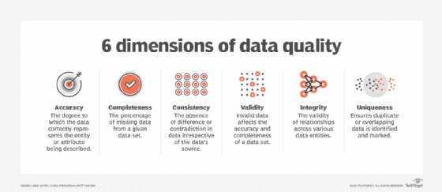
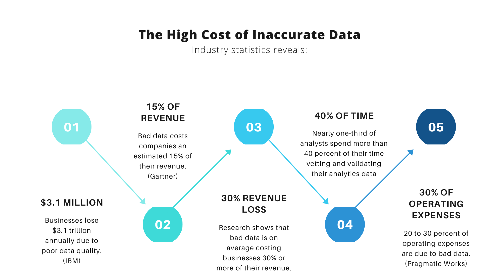
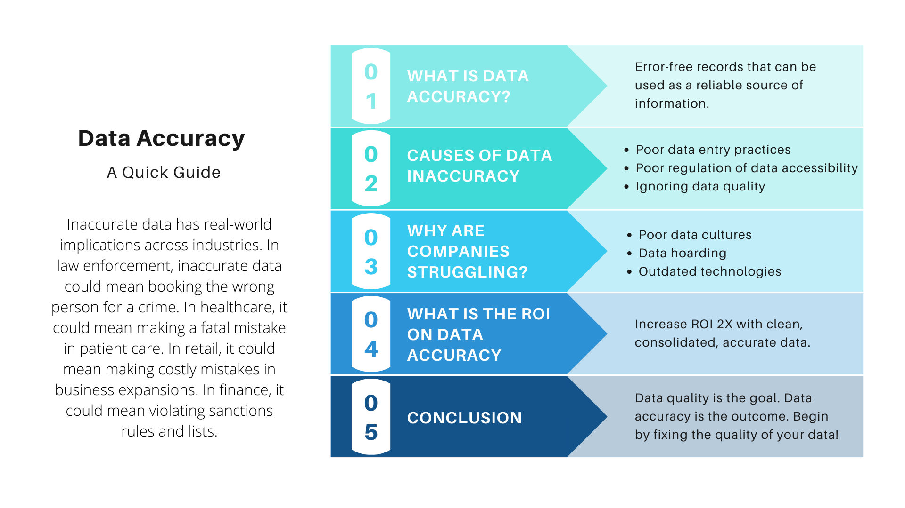
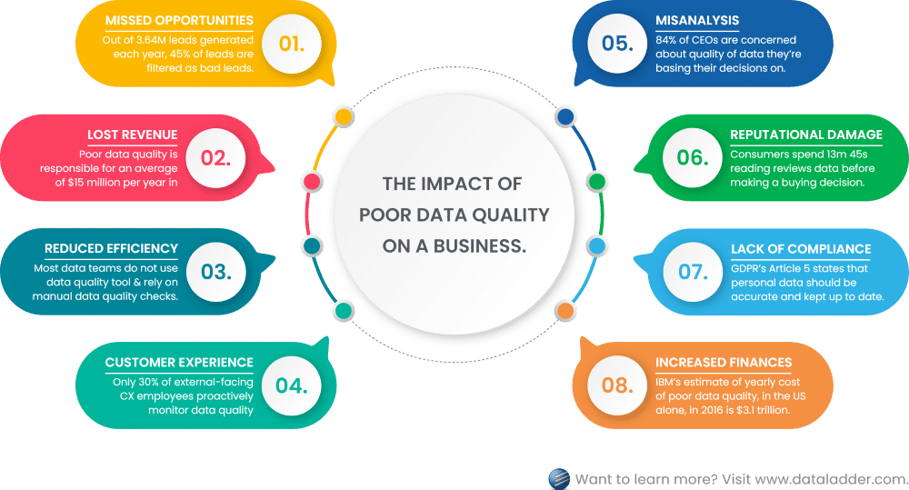
Video Presentation
Transcript
The second factor we will look at is precision.
Precision applies to numeric data only and is the difference between repeated measurements. When a measurement is taken or a calculation is repeated numerous times, each resulting in different final values, the difference between these results indicates how precise the measurements are or calculations. Precision is measured by finding the range or difference between the largest measured value and the lowest measured value. The smaller the difference between, the more precise the information is which will affect its implementation at a later stage.
Let’s look at the benefits of data precision:
Precise data provides a level of confidence a business will have in its data. This will increase the chances of taking risks to further the business and promote growth through confidence in the knowledge.
Limiting repetitious tasks can be done when precise data is used alongside accuracy in order to limit the number of repeated mistakes made or unfavorable outcomes which can save revenue and time during many stages of the business.
Setting a business apart from other competitors is done through precise marketing and advertising to effectively communicate with the target market far better than competing businesses and retain or receive new customers.
Here are some drawbacks to the lack of precision:
Imprecise data can cause a high cost of failure when a business relies on data to make decisions or investments that could aid a company to grow or recover from bankruptcy; this requires high-precision data, otherwise, it can result in a business’s downfall. For example: When a project has a deadline being precise can be very helpful if imprecise data is used; it could slow down tasks and prevent the business from making a deadline that could cost them tenders and other business opportunities.
Imprecise data is difficult to detect because similar data can be collected but it may not be the right type of data indicating precision but not accuracy. For example: A business knows that its customers are in high demand for wedding rings and orders a new shipment of 100 gold wedding rings, but the shipment form should have stated that only silver wedding rings were in demand. This error was due to precision as the right type of ring was ordered but in the wrong color.
Precision and accuracy can be improved in the same way. Therefore, we recommend that you watch our previous video on accuracy.
Data can be accurate but not precise, but it can also be precise and not accurate. Here is a case study that identifies the difference between accuracy and precision:
First, we will look at accuracy: A GPS is used to track a cyclist's location; the center of the circle is where the cyclist is located, and each dot represents the GPS’s attempt at locating them. From the image, the four attempts are located close to the center even though they are spread out across the whole inner circle. This represents high accuracy with little precision.
Now let’s look at precision: Each time the GPS locates the cyclist the dots are far away from the center of the circle but are situated very close in a smaller area. This represents high precision with little accuracy.
The next topic that will be covered is Completeness. Thank you for watching.
Q. What is precision?
A. How close the difference is between repeated measurements.
Q. How can you measure precision?
A. Precision is measured by finding the range or difference between the largest measured value and the lowest measured value.
Q. Precision helps set a business apart from competitors. True or false?
A. True Having precise marketing and advertising will help effectively communicate with the target market far better than competing businesses and retain or receive new customers.
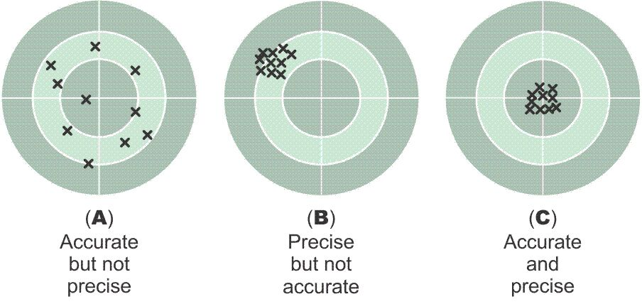
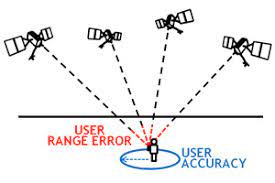
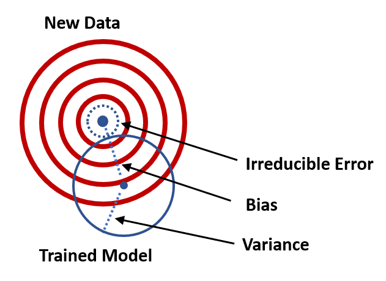
Video Presentation
Transcript
The third factor we will look at is Completeness.
Completeness is the measure of the amount of essential information obtained to make informed decisions. Data must be relevant and have a successful application to be of use to a business. If information is missing or has a bias attached to it and does not show the full picture, it can affect a business.
Let’s look at the drawbacks to incomplete data:
It can be costly making decisions based on incomplete data and can not only affect people's lives but entire businesses as well, whether it be financial or the degradation of a business’s reputation. For example: If a law firm goes to court against a person or business without knowing all the facts and parties involved, it may help convict an innocent party of crimes they did not commit.
Incomplete data can make for ineffective customer service. If a customer’s information is incomplete, it could result in providing the wrong types of advertising or needs satisfaction that a customer is interested in, which could potentially push them away to seek products/services from competing businesses. For example: A business has an online clothing website that caters to international customers. If the business does not have the customer's geographical location, they may advertise winter clothing instead of summer clothing, reducing the chances of making a sale and meeting their customer’s needs.
Here are some causes of incomplete data:
Incomplete data is a result of inadequate data collection methods. Without standardized collection requirements, data could be omitted or subpar by accident or on purpose as there is no defined guidance as to what data is required.
Incomplete data is a result of data entry errors or omissions. Manual systems lead to human error that could result in incomplete information or the complete omission of data that is vital.
Attaining data from external sources that have different standards and structures could lead to missing information. Data could also be missing due to delays from different sources that could affect its value entirely.
Let’s look at some steps that can be taken to improve data completeness:
Using validation techniques allows data to be verified and profiled to ensure vital information is present and decisions are not based on incomplete data.
Establishing what information is essential, relevant, and required to make informed decisions and what information if not acquired could jeopardize the data’s usefulness and trustworthiness.
Performing data observability and automated monitoring through pattern analysis helps identify when data is missing and notify the relevant employees to rectify the problems.
Data lineage allows issues with data to be identified and tracked back to the root cause to be fixed proactively and reduce the impact of incomplete data.
Here is a case study about 5 behavioral journals that have been disregarded due to incomplete data:
According to the Journal of Modern Applied Statistical Methods, after the evaluation of five behavioral journals concluded that many Single-case experimental design studies suffer from incomplete data due to the multiple measures of a targeted behavior. These studies' results were obscured by inconsistencies in their sample population data. The data was incomplete as some participants omitted data which prevented researchers from fully analyzing the data.
Additionally, because of incomplete data, data substitutions and estimations altered the results due to biased guesses and insufficient inference making these journals unreliable due to vague results intertwined with speculation and uncertainty.
The next topic that will be covered is Consistency. Thank you for watching.
Q. What does it mean to have complete data?
A. Having a required amount of essential information in order to make informed decisions.
Q. How does identifying essential data improve completeness?
A. Identify what information is relevant and required to make informed decisions and what information if not acquired could jeopardise the data’s usefulness and trustworthiness.
Q. True or false, inadequate data collection methods is a cause of incomplete data?
A. True, without standardised collection requirements data could be omitted or subpar by accident or on purpose as there is no defined guidance as to what data is required.
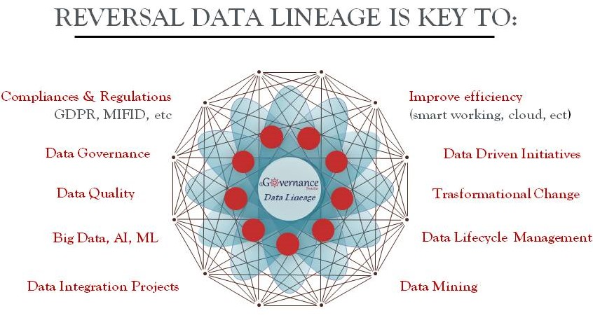
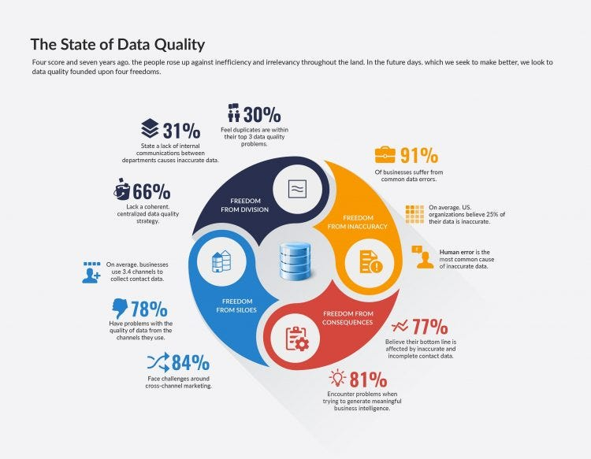
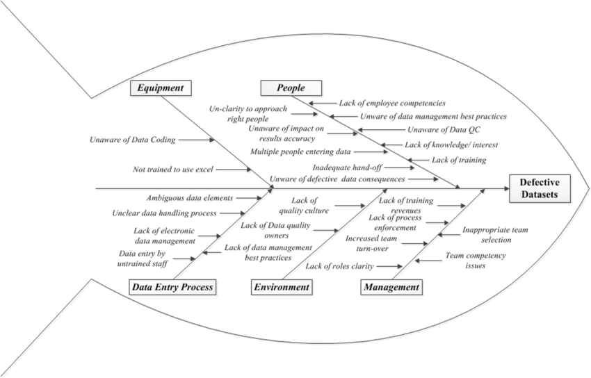
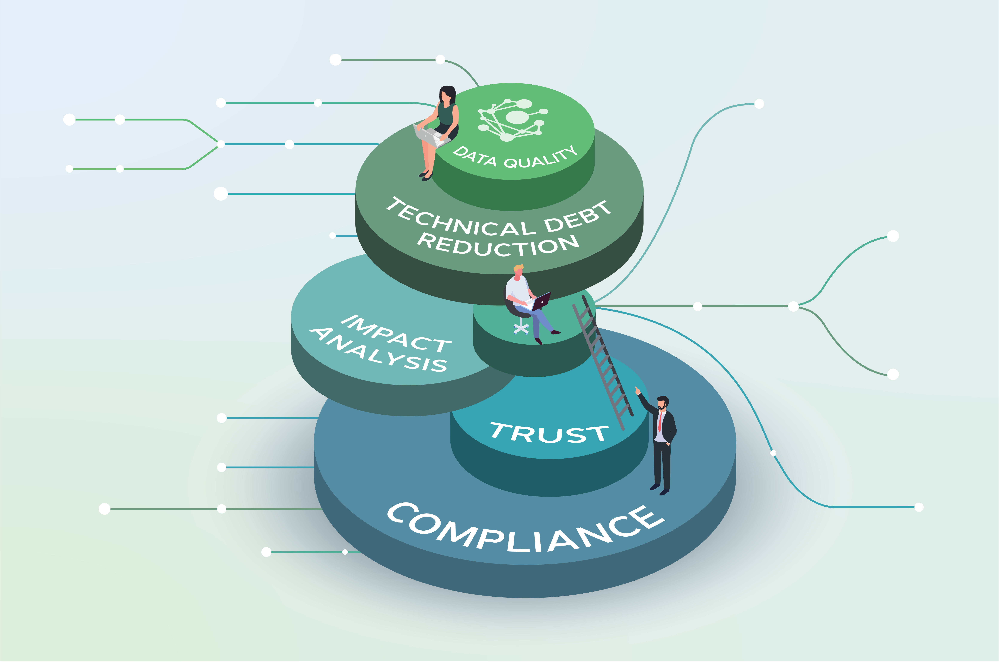
Video Presentation
Transcript
The fourth factor we will look at is Consistency.
Consistency is when data is coherent, accurate, and uniform throughout a business system. Data needs to be the same at any level in a business, ensuring standards are kept throughout its use and storage.
Let’s look at the benefits of data consistency:
Having consistent data leads to confidence in the data’s value to guide insight to make good data-driven decisions. If data conflicts between different departments, it makes identifying the correct data difficult, and time-consuming, reduces trust in analytics, and hinders growth.
Consistent data makes for efficient business processes as employees are confident in the reliability and accuracy of data in use. Having inconsistent data slows down projects and reduces productivity as time is spent identifying the source of inconsistencies instead.
Many industries need to have regulated, consistent, and accurate data throughout the storage and reporting processes. If they are not complied with, it can result in legal action such as fines and lawsuits.
Efficient collaboration either internally between departments or externally between companies relies on consistent and standardized data; otherwise, it could result in misunderstandings, delays, or miscommunication.
Having consistent data helps with data integration and analysis. A business has many data sources through business processes that require data to be consistent; otherwise, it could lead to complications in data integration resulting in inaccurate conclusions affecting investments.
Let’s look at some causes of inconsistencies:
Data migration where data is moved to new systems, it could result in data mapping errors that may carry inconsistencies and affect the reliability of the data.
Data duplication where multiple copies of data can result in discrepancies as each one is changed in different ways without reflecting on the others. This can cause misreporting and make it difficult to distinguish the most irrelevant copy.
Manual entry leads to human errors that can result in inconsistencies across different departments that are difficult to identify.
A lack of training and awareness can result in inconsistencies, where new employees may be inexperienced in capturing data which could lead to inconsistencies and errors. A lack of training will affect accuracy and result in poor data quality.
Integration challenges such as merging multiple sources of information with different standards or formats could lead to differences or conflicting results. Misaligned data can impede analysis and data-driven decisions.
Here are some steps to improve data consistency:
Having clear consistent rules such as formats, standards, and units of measurement needs to be clearly defined before data collection begins to adhere to conventions to ensure consistency.
Performing cross-validation of data can assist in finding discrepancies through the migration and integration process.
Having automated checks where data quality tools and scripts are used to schedule checks at regular intervals to identify issues straight away resulting in fewer issues down the line.
Historical data analysis can help by reviewing previous generations of data to identify patterns of inconsistencies and reoccurring issues that can help locate the root cause to be fixed.
Referential integrity checks ensure data remains consistent and accurate. For example: If a customer should not be able to purchase products that don’t exist in the database.
Here is a case study showing how data consistency affects banking transactions:
When a banking transaction occurs between Mike and Alisa, a request is sent in order to obtain the current account balance of the person paying. If the account balance or details changes at any point in the transaction process, the data is deemed unreliable as it cannot be considered consistent data. This will require the initial balance request to be resent in order to establish if the paying customer is able to pay or to ascertain whether the banking details given are in fact reliable before sending the payments. If the money is sent without establishing consistency, money may be lost or paid to the wrong person.
The next topic that will be covered is Currency. Thank you for watching.
Q. What does it mean to have consistent data?
A. When data is coherent, accurate, and uniform throughout a business system.
Q. Highly skilled and trained employees can cause data inconsistencies. True or false?
A. False, the lack of training and awareness when new employees are inexperienced in capturing data could lead to inconsistencies and errors. A lack of training will affect accuracy and result in poor data quality.
Q. Cross-validation is a method to improve data consistency. True or false?
A. True, performing cross-validation of data can assist in finding discrepancies through the migration and integration processes that will assist in keeping data consistent throughout its use.
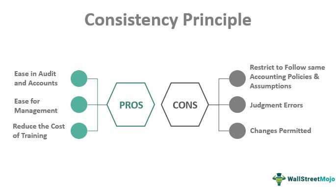
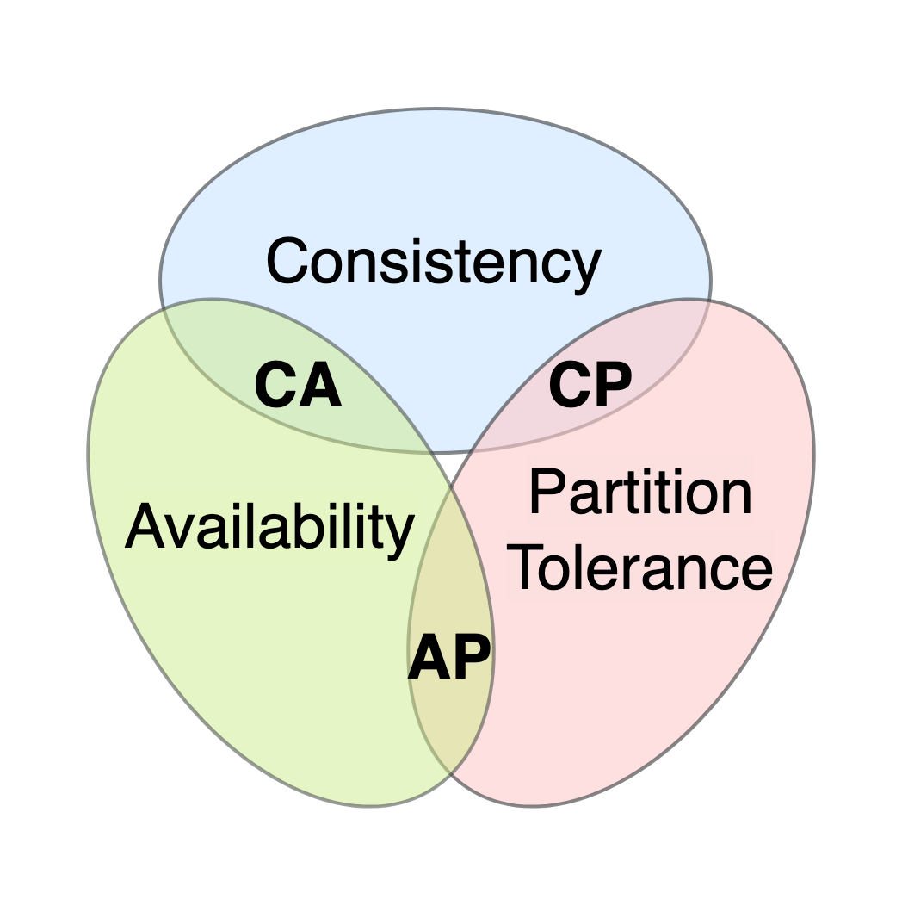
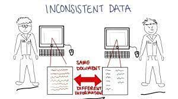
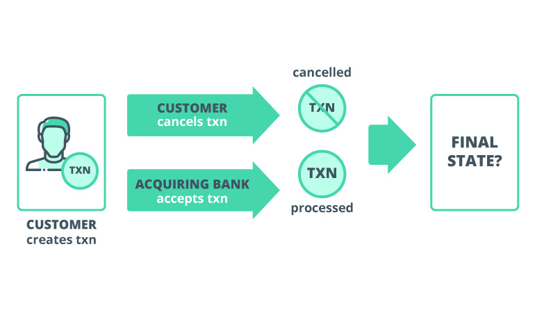
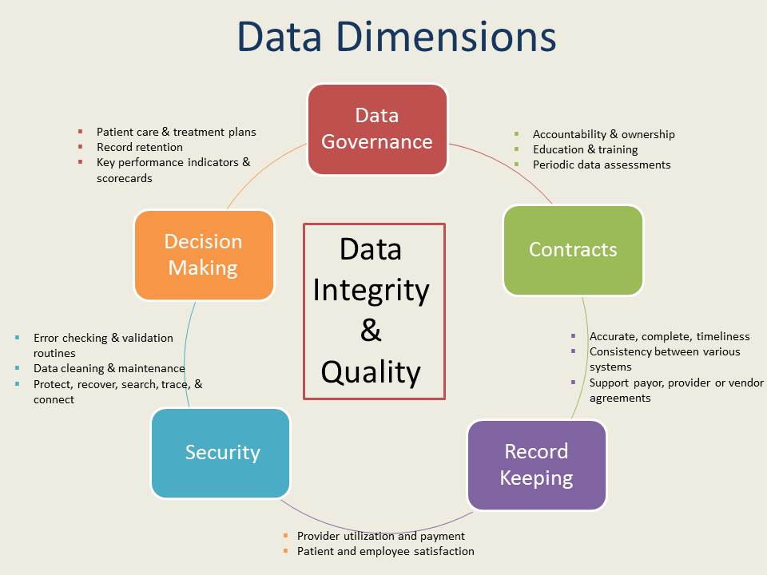
Video Presentation
Transcript
The fifth factor we will look at is Currency.
For the data to have currency, it needs to constantly be updated and reflect relevant information to remain valuable enough for data-driven decisions. Data needs to reflect real-time factors to remain current and accurate.
Here are some benefits of data currency:
With relevant data, businesses can make accurate and best-suited decisions to grow or benefit the company.
Improved data analytics can be achieved through current data, leading to high accuracy and reliability during analysis, which could further lead to improved insight and, as a result, the actions taken based on this data.
Through the use of real-time data monitoring, a business can proactively make decisions and interventions as needed to avoid disasters or take opportunities as they arrive.
Having automatically updated data can assist in streaming business operations and improving efficiency, as employees do not have to take time to research or analyze data to get the latest results.
Current data leads to quick responses to changes in the market and emerging trends, and this allows businesses to gain an advantage over competitors.
Some drawbacks to incomplete data are as follows:
It is inaccurate, as data ages, it becomes unreliable. The world is constantly evolving, so measurement standards, sensory reads, and customer needs change regularly, and without up-to-date data, a business cannot effectively operate.
It raises storage concerns; outdated data steals large amounts of storage space that could be used for more relevant information. This could affect businesses that cannot differentiate between outdated and current data, resulting in the need to purchase large storage devices unnecessarily.
It reduces system performance due to a backlog of outdated data that needs to go through verification steps, get approval from management, and risk assessment, especially wasting time as it may be discarded later on.
Using outdated data could cause business legal repercussions if standards and regulations are not adhered to. Ethics and legal mandates are annually updated, and therefore, a business needs to ensure that the data they possess is current.
It is costly when decisions are based on outdated information, and it can lead to failure due to bad choices.
The following steps can be taken to improve data currency:
Purging or cleaning data storage will ensure outdated data is moved so that it will not get mixed with new data and affect its accuracy. For example, keeping phone numbers or addresses of customers that no longer subscribe to a business wastes space, so deleting them from the system will open space for new clients.
Having an automated system will automate scheduled checks to remove outdated data over a certain time and tag the most recent data as important. For example, when promotions or sales are over, the data regarding reduced prices and what items are on sale needs to be automatically cleared so that customers do not think the promotions are still running.
Having protection tools can monitor who accesses data and if it has been manipulated. For example, if data is changed, such as phone numbers and street addresses, or orders have already been accessed and processed, they need to be flagged and monitored in order to prevent orders from being missed.
Here is a case study that shows the need for data currency:
Google Maps ensures data currency is the most important aspect of the company. Google Maps sends cars equipped with cameras to areas of new developments to ensure new roads and areas are added to their databases. Taking new satellite pictures every few years ensures that any changes to a landscape are upgraded and available to their customers.
When businesses close or new franchises move into areas, Google Maps needs to ensure they update the maps to stay relevant to users; otherwise, it may indicate that a business is located on the map, and when users arrive at the destination, it is no longer there. Therefore, ensuring data currency is the most vital data quality attribute for Google Maps.
The next topic that will be covered is Uniqueness. Thank you for watching.
Q. What is data currency?
A. When data is constantly updated and reflects relevant information to remain valuable enough for data-driven decisions.
Q. A benefit of data currency is that it provides real-time monitoring. True or false?
A. True, using real-time data monitoring a business can proactively make decisions and interventions as needed to avoid disaster or take opportunities as they arise.
Q. Does outdated data affect a business performance?
A. Yes, Systems may perform slower due to a backlog of outdated data that needs to go through verification steps, get approval from management and risk assessments, and essentially waste time as it may be discarded.
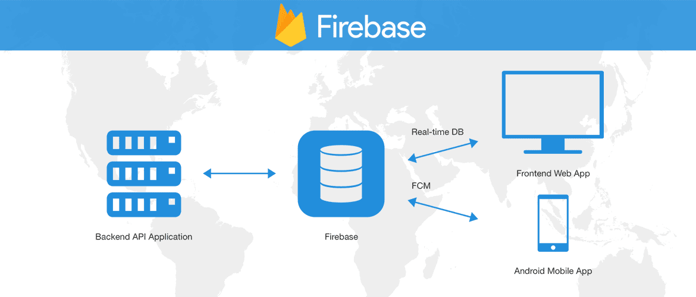
Video Presentation
Transcript
The sixth and final factor we will look at is Uniqueness.
Uniqueness is the act of a dataset appearing only once, and therefore no duplications exist. If any data instances have multiple data entries, it is not unique.
Here are some drawbacks to non-unique data:
It may have biased results. Duplicated data can affect medians, means, and average statistics that could result in misleading judgments or misunderstandings in stock levels, a business’s revenue or losses. For example: If a customer’s order is accidentally captured twice, it may lead to issues with payments and distort the amount of revenue a business thinks it makes in a month.
It may lead to overfitting machine learning tools. AI models may memorize duplicated data instead of learning data patterns that could affect analysis and other processes that they are involved in at a later stage. For example: If the models are only used to seeing duplicate addresses to the same location, it may try to predict the addresses of new customers and log the wrong address.
Duplicated data takes up a large amount of storage space unnecessarily, which could affect the process of storing additional more relevant data. For example: A customer's details may be duplicated and stored as a separate entity, which would take up space that could have been used for a different client.
Non-unique data such as duplicate data is necessary and acts rather as data instances rather than duplication. Not all data is meant to be unique which can make it time-consuming to identify and may lead to the deletion of relevant data. For example: The cities in which customers live may be the same and are not considered duplicate data as it is relevant data that helps locate shipping addresses.
Here are some steps to improve data uniqueness:
Having validation checks can help identify duplicates and then establish if it's true duplicates or just similar points that make use of cardinality rules.
Having centralized databases will reduce duplication upon user entry. If data is structured and has validation checks, duplicate data will trigger warnings and will not be entered into the database to begin with.
Businesses can make use of database management systems to manage and monitor duplications and notify employees when issues arise.
The following case study shows the importance of data uniqueness:
A retail store needs to make sure every barcode of their different products is unique. These codes will be stored in a database along with the price and name of the products. If a chocolate and blanket have the same barcode, it could cause issues such as undercharging a customer on certain products or overcharging them.
It will affect the restock of items if the blankets are sold as chocolates because the number of blankets in stock will decrease but the data will state a full inventory exists, which will affect reorders and potentially cause losses to the business while waiting for a shipment to refill the warehouses. However, on the other hand, the stock of chocolates will be higher than what the database states which may lead to premature reorders that cannot be stored as the warehouse capacity overfills.
The next topic that will be covered is Data Ethics. Thank you for watching.
Q. What are the benefits of implementing information systems in a business?
A. Improved productivity and efficiency, allow for data storage and analysis, improved internal communication, customer service, decision making and reduces costs.
Q. What are the 4 steps that a business should follow to implement information systems?
A. Examine the Business Requirements, create a Software Infrastructure, create System Integration and Put the Solution into Action.
Q. True or false, system integration is a complicated process that does not involve substantial planning, system design, and software development?
A. False, it DOES involve substantial planning, system design, and software development.